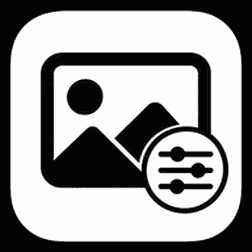
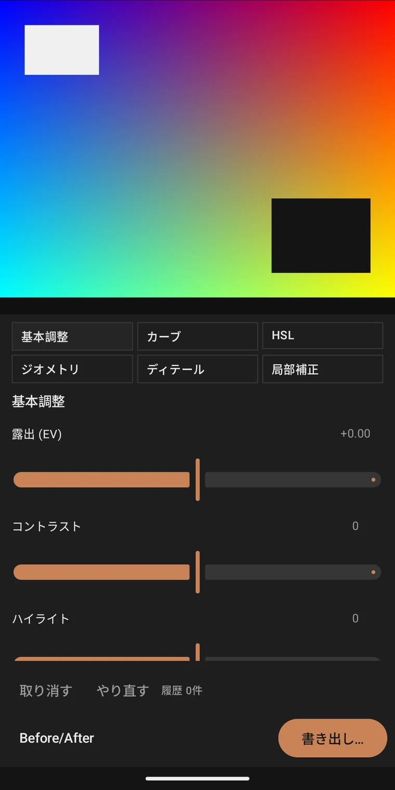

TomTONE
Exposição, contraste, altas luzes, sombras, brancos, pretos, vibração, saturação, temperatura e tonalidade.

Image Shot v0.1.0Android 16+ · Kotlin / Jetpack Compose · v0.1.0 · MIT
Image Shot é um editor de fotos não destrutivo e offline-first para Android 16 ou superior. Exposição, balanço de branco, curvas, HSL, rotação em ângulo livre, detalhe e máscaras locais ficam gravados como instruções — o arquivo original nunca é sobrescrito, então toda mudança pode ser desfeita. Nome de desenvolvimento: Prism Photo.

What it does
O Image Shot não guarda uma imagem já processada, e sim os passos que chegaram nela. Assim dá para voltar a qualquer momento e refazer o mesmo resultado depois, a partir do original ou de um arquivo exportado.
As edições são registradas como instruções, não queimadas nos pixels. O histórico só acrescenta e guarda o estado de cada passo, então voltar nunca custa qualidade. Se o app for encerrado, é só abrir de novo e continuar.
Exposição, contraste, altas luzes, sombras, brancos, pretos, vibração, saturação, temperatura e tonalidade. Todo controle também aceita valor digitado, então o mesmo visual se repete em outro quadro.
Modele a tonalidade com curvas master e R / G / B e ajuste matiz, saturação e luminância em oito faixas — só o azul do céu, ou só o vermelho da pele, sem mexer no resto.
Rotação em ângulo livre até ±45° com entrada numérica, espelhamento horizontal e vertical, e recorte livre. Rotação e recorte são separados: o enquadramento fica e a linha do horizonte se acerta.
Nitidez e redução de ruído de luminância no quadro inteiro; máscaras linear, radial e pincel com feather para mexer em exposição ou saturação só dentro delas. Pare antes de ficar exagerado.
Escolha a qualidade e o destino, e a exportação roda em segundo plano. O EXIF leva data e dados da câmera; a localização é removida.
Six panels
Abra só o painel de que precisa, com a prévia sempre à vista. Cada painel mostra o quanto você moveu e o valor exato.
Exposição, contraste, altas luzes, sombras, brancos, pretos, vibração, saturação, temperatura e tonalidade.
Curvas master e R / G / B. Coloque um ponto e mova a subida e a queda da curva diretamente.
Matiz, saturação e luminância em cada uma das oito faixas.
Rotação em ângulo livre até ±45°, espelhamento horizontal e vertical, e recorte livre.
Nitidez e redução de ruído de luminância, com controles separados.
Máscaras linear, radial e pincel. Suavize a borda com feather e ajuste só o que está dentro.
Flow
Escolha uma foto e o editor abre. Confira o resultado na prévia, mexa nos valores dos painéis — desfazer, refazer e a contagem do histórico ficam sempre na parte de baixo da tela.
Traga várias fotos pelo seletor do sistema, ou escolha um arquivo ou pasta pelo SAF.
Passe pelos seis painéis — tom, cor, tonalidade, geometria, local — com valores que também podem ser digitados.
Veja o antes e o depois e volte no histórico o quanto precisar.
Escolha JPEG ou PNG, defina a qualidade e o destino. O original permanece intacto.
Layout
No celular em pé, os painéis ficam abaixo da prévia; deitado, vão para o lado. A partir de 840dp, o tablet passa a duas colunas e mantém a foto grande enquanto você ajusta.
Painéis abaixo da prévia, ao alcance de uma mão.
Prévia e painéis lado a lado, com a foto maior.
Duas colunas a partir de 840dp, com a prévia na tela.
Privacy
O Image Shot não declara a permissão INTERNET. Não existe função de upload nem caminho que envie a foto para fora em busca de análise — toda a edição acontece no aparelho.
Também não pede acesso amplo ao armazenamento: leitura e gravação passam pelo seletor de fotos do Android e pelo SAF (Storage Access Framework). O original nunca é sobrescrito, e o JPEG ou PNG exportado sai sem dados de localização.
Get started
O código do Image Shot é público no GitHub. A versão 0.1.0 é distribuída como APK assinado no GitHub Releases.
Abrir o GitHub Releases./gradlew :app:assembleDebug.Requer Android 16 (API 36) ou superior. As fotos são lidas pelo seletor de fotos do Android e pelo SAF.
Developer
Criado por Yuki Orita (折田悠希 / おりたゆき). Relatos de bug e pedidos vão para o Discord; o dia a dia fica no X e no site oficial. Código e versões estão no GitHub.